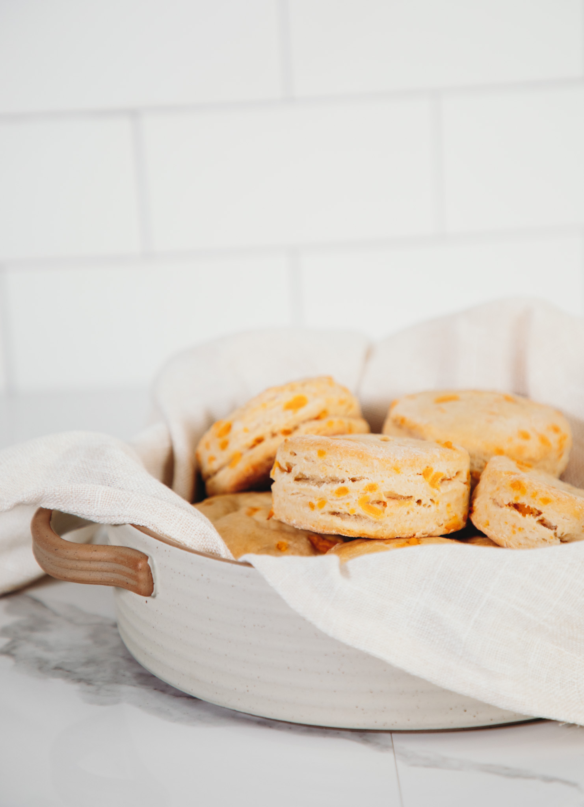

home
buttermilk pancakes
Sides, Vegan Food
Flaky Cheddar Buttermilk Biscuits 😋
DECEMBER 23, 2021 • 93 COMMENTS

DESCRIPTION
Entirely plant-based buttermilk biscuits. They’re flaky, dotted with pockets of cheddar, and absolutely addictive with a
pat of butter and some jam!
INGREDIENTS
- 1 cup unsweetened original nondairy milk
- 1 tsp white vinegar
- 2–1/2 cups all-purpose flour, plus extra for dusting
- 1 tbsp baking powder
- 1 tbsp sugar
- 1 tsp salt
- 1/2 cup cold vegan butter (1 stick)
- 1 cup vegan cheddar shreds
INSTRUCTIONS
- Preheat oven to 425 F.
- Mix together the nondairy milk and vinegar and set aside.
- In a large mixing bowl or a food processor, add the flour, baking powder, sugar and salt and mix until combined.
- If using a food processor: Add butter and pulse until incorporated into a crumbly, dry mixture.
If using a knife or grater: Cut butter into very small pieces. Mix with the flour by hand or with a pastry blender until
incorporated into a crumbly, dry mixture.
- Stir in the cheddar shreds until combined.
- Add the buttermilk, reserving about 1 tbsp of it to brush the tops. Stir with a wooden spoon until just combined.
- Lightly dust a clean surface with flour and turn the dough out onto the surface, using your hands to form a rectangle.
Cut the rectangle into 4 sections, then stack them on top of each other and press down to squish them together (this is
how you get nice flaky layers!)
- Use hands to form a rectangle about 1-inch thick, then cup out biscuit shapes with a cookie cutter or glass.
- Place on a baking sheet and brush the tops with the reserved buttermilk. Bake 12 minutes, until golden brown on top.
- Remove from oven and let cool slightly before serving. Store in an airtight container at room temperature for up to 2
days, or in the fridge up to 4 days.